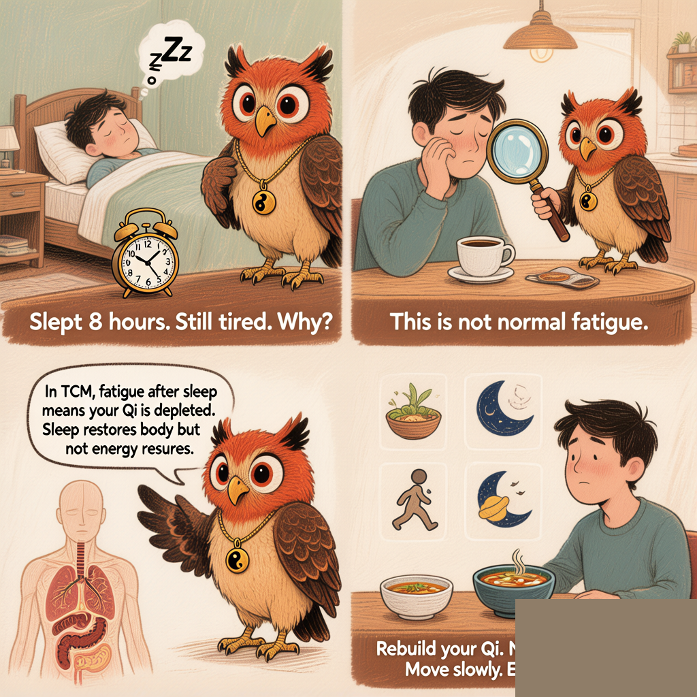

244| 8 Hours of Sleep, Still Wrecked?
Your Organs Run a Night Shift — And Yours Called In Sick
245|
246|
249|
250|
251| 256| The Western answer usually goes like this: Better mattress. Less caffeine. More exercise. Maybe some melatonin. 257| All reasonable. All occasionally helpful. But if you've tried them and still wake up feeling like a zombie, 258| it might be time to hear what an ancient medical tradition has to say about your exhaustion. 259|
260| 261|262| Because here's the thing: Chinese medicine doesn't think sleep is just about hours. 263| It thinks sleep is about what your organs were doing while you were lying there with your eyes closed. 264|
265| 266| 267| 269|
269| The TCM Lens: Your Body Has a Night Shift
278| 279|280| Traditional Chinese Medicine maps the body's functions to what's called the 281| Organ Clock (子午流注 zi wu liu zhu). 282| Each two-hour window corresponds to peak activity in a specific organ system. 283| During sleep, your body isn't just "resting" — it's running maintenance cycles. 284|
285| 286|288| The Night Shift (Simplified) 289|
290|292| 1 AM – 3 AM — Liver: detoxification, blood renewal, emotional reset
293| 3 AM – 5 AM — Lungs: breathing regulation, grief processing
294| 5 AM – 7 AM — Large Intestine: elimination, letting go 295|
299| Here's where it gets interesting. If you consistently wake up at the same time every night — 300| say, 2:30 AM — that's not random. In TCM thinking, that's your Liver trying to 301| get your attention. The Liver system (which in TCM is about much more than the physical organ) 302| governs the smooth flow of Qi and blood. When it's stuck — usually from stress, frustration, 303| or chronic anger — you get what TCM calls Liver Qi Stagnation. 304|
305| 306|307| And one of the classic symptoms? Waking up tired. Not because you didn't sleep enough, 308| but because your body's overnight maintenance crew never clocked in. 309|
310| 311| 312|
314|The Other Culprit: Your Spleen Is Drowning
319| 320|321| There's a second, equally common reason for waking up exhausted: Spleen Qi Deficiency. 322| In TCM, the Spleen (with its partner the Stomach) is responsible for transforming food into usable 323| energy — what we call Qi and Blood. It's your body's power plant. 324|
325| 326|327| And what damages the Spleen? A few very modern, very common things: 328|
329| 330|-
331|
- Cold drinks with meals. The Spleen likes warmth. Ice water with your lunch is like throwing a bucket of cold water on a campfire. 332|
- Eating irregularly. Skipping breakfast, then having a massive dinner at 9 PM. Your Spleen has a shift schedule and you're violating every labor law. 333|
- Overthinking. In TCM theory, excessive mental work directly taxes the Spleen. If you spend all day in spreadsheets and Slack, your Spleen is filing overtime it never agreed to. 334|
- Damp-producing foods. Dairy, sugar, fried foods, excessive raw/cold foods. These create what TCM calls "Dampness" — think of it as internal humidity that gums up the works. 335|
339| What You Can Actually Do (Starting Tonight)
348| 349|350| No philosophy essay here. Here's what to try, in order of least to most effort: 351|
352| 353|🍵 1. Warm Ginger Tea After Dinner
355|356| Slice 2–3 thin pieces of fresh ginger. Steep in hot water for 10 minutes. 357| Drink it warm, not hot, about 30 minutes after your evening meal. 358| Ginger warms the Spleen and Stomach, giving your digestive fire the fuel it needs 359| to process dinner before you sleep. Do this for three nights in a row and see if 360| your morning feels different. 361|
362|❄️ 2. No Cold Drinks After 4 PM
366|367| This one is free and requires exactly zero ingredients. After 4 PM, everything you 368| drink should be room temperature or warm. No ice. No refrigerated beverages. 369| Your body is naturally cooling down as evening approaches — don't accelerate 370| that process when your Spleen already struggles with cold. 371|
372|💪 3. The "Great Rushing" Acupressure Point
376|377| On the top of your foot, in the webbing between your big toe and second toe, 378| slide your finger about two finger-widths back toward your ankle. You'll find 379| a tender spot. That's Liver 3 (太冲 Tai Chong) — 380| the single most famous point for moving stagnant Liver Qi. Press firmly with 381| your thumb for 30 seconds on each foot, twice a day. It might be tender. 382| That's the point. (Literally.) 383|
384|🥞 4. Cooked Breakfast, Not Cold Cereal
388|389| Your Spleen wakes up slowly. Hitting it with cold milk and raw granola 390| first thing in the morning is like asking someone to run a marathon 391| right after they open their eyes. Try warm oatmeal, congee (rice porridge), 392| or even just a poached egg with steamed vegetables. Give your Spleen 393| something warm to work with. 394|
395|400| Your body isn't broken. It's been trying to tell you something, 401| but nobody taught you its language. 402|
403|404| Try one of these — just one — for the next three days. 405| See what your body says back. Ollie will be here when you return. 406|
407|